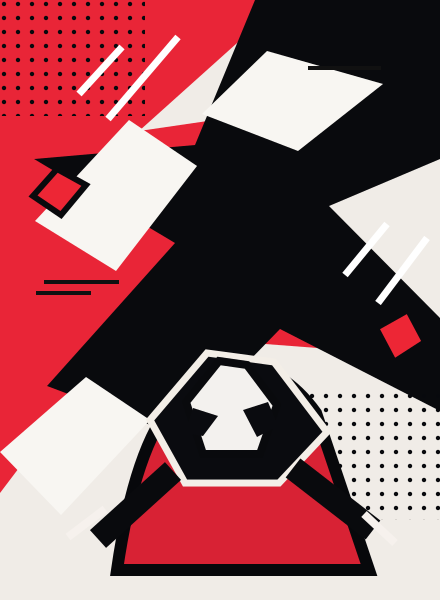

ORIGINAL UI EXPERIMENT · Persona 5 RoyalEditable component specimen / responsive web01 — 03
Persona 5 RoyalAFTER SCHOOL / NIGHT FILE 08
REFERENCE STUDY
Original names · synthetic state
Original names · synthetic state

ORIGINAL VECTOR ARTNO GAME CHARACTER OR LOGO
Pick who moves first
A compact lineup makes role and readiness visible before the next risky move.